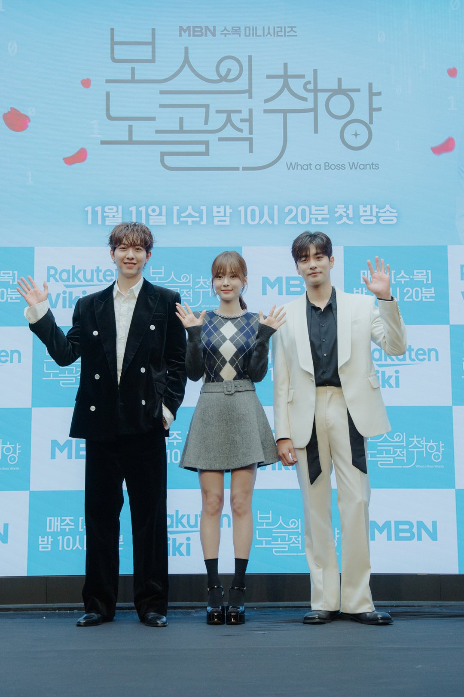
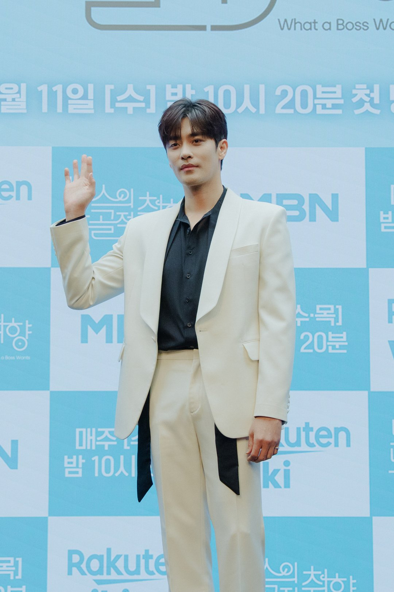
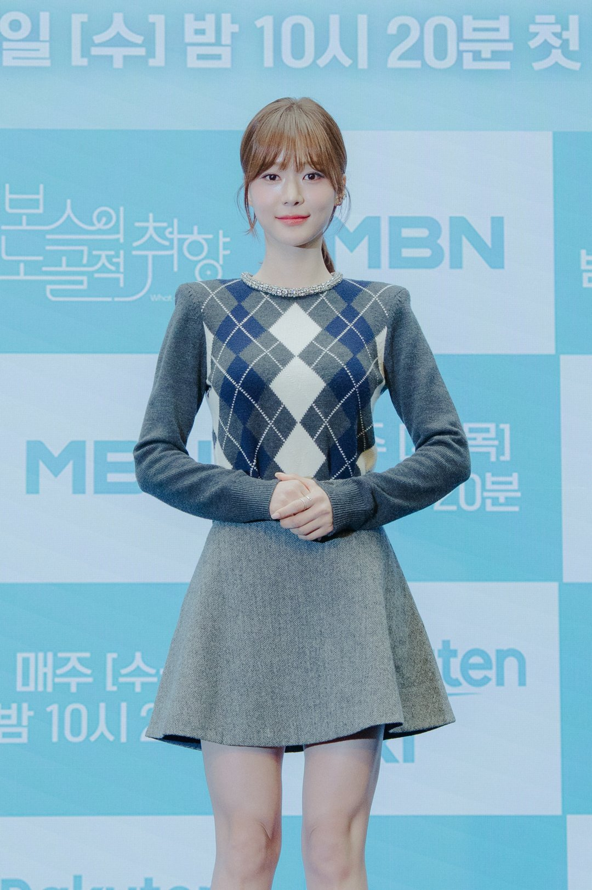
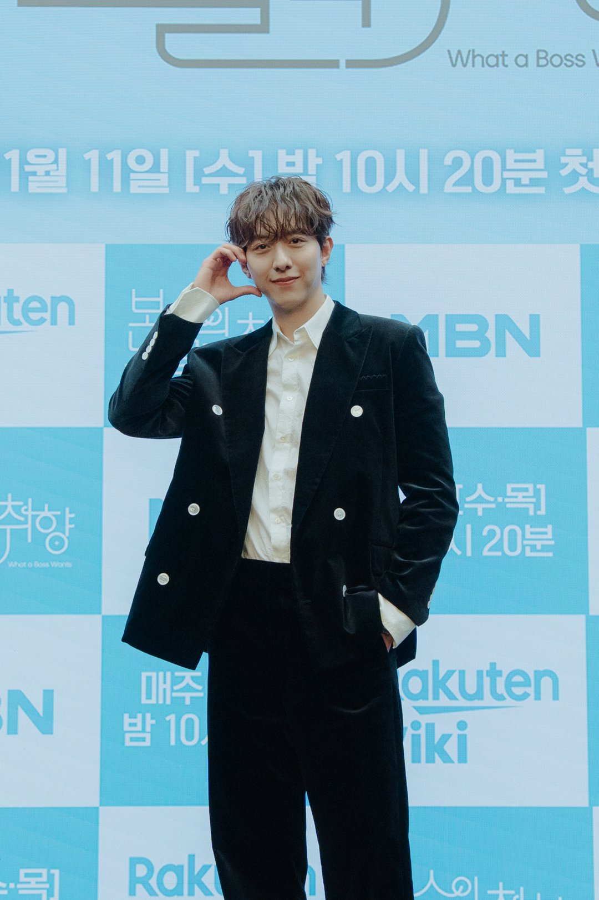
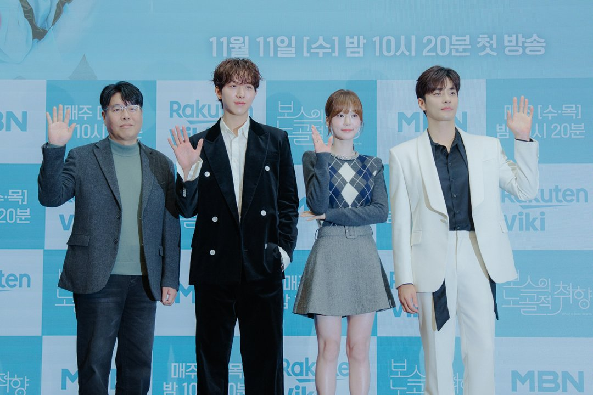

앨범 한 장에 담긴 목소리의 주인을 찾아 나선 재벌 보스. 그리고 낮에는 취업을 준비하고 밤에는 무대에 서는 인디밴드 보컬. 성훈이 3년 만에 드라마로 돌아온 MBN 수목드라마 '보스의 노골적 취향'의 출발점이에요. 첫 방송을 놓쳤다면 누가 누구인지, 원작과 무엇이 달라졌는지부터 짚어 볼게요.
📷 사진 1 자리
▲ MBN '보스의 노골적 취향' 제작발표회의 이정신, 오세영, 성훈(왼쪽부터) · 사진=MBN 제공
취향 없는 보스, 이중생활 중인 보컬
권도혁(성훈)은 오예스엔터테인먼트 대표예요. 연예 기획사를 이끌면서도 데이터와 논리만 믿고, 음악은 클래식만 고집하는 '취향 제로' 인물이죠.
📷 사진 2 자리
▲ 권도혁 역의 성훈 · 사진=MBN 제공
이은채(오세영)는 정반대 자리에 있어요. 낮에는 취업 준비생, 밤에는 인디밴드 보컬 '수'로 사는 사람이에요. 성격부터 취향까지 다른 두 사람이 우연히 얽히면서 위장 로맨스가 시작돼요.
📷 사진 3 자리
▲ 이은채 역의 오세영 · 사진=MBN 제공
강솔 감독은 취향이 다른 두 남녀가 서로의 취향이 돼 가는 과정을 이 작품의 재미로 꼽았어요.
비밀을 아는 세 번째 사람
삼각 구도를 만드는 건 이정신이 맡은 소아과 전문의 문태경이에요. 우연히 마주친 은채의 비밀을 알게 된 뒤 그를 돕는 인물이에요. 차가운 보스와 다정한 의사, 두 남자의 온도 차가 이 드라마의 축이에요.
📷 사진 4 자리
▲ 문태경 역의 이정신 · 사진=MBN 제공
배우들 사이의 관계도 극과 겹쳐요. 이정신은 씨엔블루 월드투어 중에 캐스팅 제의를 받았어요. 보컬 역이 낯설었던 오세영이 참고할 가수를 묻자, 이정신은 여러 밴드와 아티스트를 추천하고 실제 무대와 드라마 무대의 차이까지 짚어 줬다고 해요.
이정신은 "무대에 서 보지 않은 사람이 무대에 서는 건 정말 힘든 일"이라며 촬영장에서 본 오세영의 무대를 칭찬했어요.
▶ 영상 1 자리
원작을 찾아본 사람, 일부러 덮은 사람
원작은 2015년 무렵 연재된 동명 웹소설과 웹툰이에요. 강솔 감독은 이야기의 골격은 그대로 두고, 지금 세대에 맞지 않는 부분을 작가와 함께 고쳤다고 설명했어요.
📷 사진 5 자리
▲ 강솔 감독과 이정신, 오세영, 성훈(왼쪽부터) · 사진=MBN 제공
두 주연의 준비 방식은 반대였어요. 오세영은 원작 웹툰을 찾아보며 은채를 준비했고, 원작의 은채가 더 여성스럽다면 자신의 은채는 "조금 더 말괄량이"라고 했어요.
성훈은 원작을 보려다 말았어요. 제작사와 감독이 원작을 보지 말아 달라고 요청해서 대본 속 권도혁에만 집중했다는 거예요. 원작이 있는 작품에 자주 불리는 이유를 묻자, 해외 판권이 잘 팔려서일 거라고 답했어요.
간질간질한 로코가 당길 때
'보스의 노골적 취향'은 남지연 작가가 쓰고 강솔 감독이 연출한 12부작 로맨틱 코미디예요. 웹소설과 웹툰이 원작이고, 위장 로맨스에 삼각 구도를 얹은 익숙한 공식을 택했어요.
볼거리는 은채의 이중생활이에요. 보컬 '수'로 서는 무대 장면이 있고, 실제 밴드 멤버에게 조언을 받아 준비한 장면이라 눈여겨볼 만해요. 데이터만 믿는 보스와 다정한 의사라는 두 남자의 대비도 분명해요.
📷 사진 6 자리
▲ '보스의 노골적 취향' 공식 스틸 · 사진=MBN 제공
장르물 사이에서 가볍게 볼 로맨틱 코미디를 찾는 분께 맞아요. 원작 웹툰을 본 분이라면 은채가 얼마나 달라졌는지 비교하는 재미도 있어요.
정리하면서 가장 눈에 띈 건 같은 원작을 두고 두 주연이 정반대로 준비했다는 점이었어요. 원작을 아는 은채와 원작을 모르는 권도혁이 화면에서 어떻게 부딪히는지가 이 드라마를 보는 기준이 될 것 같아요. 원작 독자라면 1회에서 은채의 말투부터 비교해 보길 권해요.
세 사람은 취향 없는 보스, 이중생활 보컬, 비밀을 아는 의사로 얽혀요. '보스의 노골적 취향'은 MBN에서 매주 수·목요일 밤 10시 20분에 방송하고, 모두 12부작이에요.




